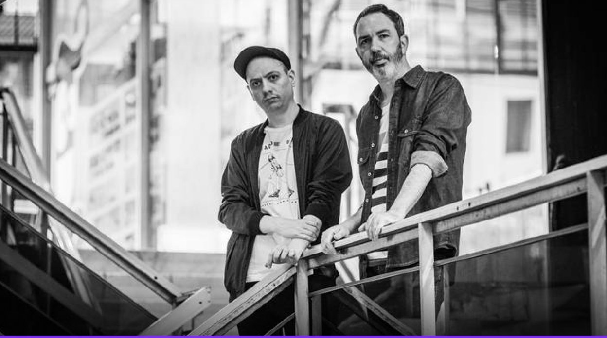

Bonus Track

Mano a mano
En este encuentro nos adentramos en la historia de Matilda, el dúo referente del electro-pop e indie pop rosarino integrado por Ignacio Espumado e Ignacio Molinos.
Hablamos sobre sus comienzos a fines de 2001 vinculados al colectivo Planeta X y exploramos cómo lograron fusionar sintetizadores bailables con la canción de autor. A través de un recorrido por álbumes clave como Para ser un pez en el mar, Imaginario Popular y Bailando en la tempestad, los músicos reflexionan sobre la vida urbana, la tecnología, la empatía y la resistencia colectiva.
Mirá la entrevista completa para conocer los secretos detrás de una de las bandas más influyentes de la escena independiente argentina.
 CINE
CINE DEPORTE
DEPORTE